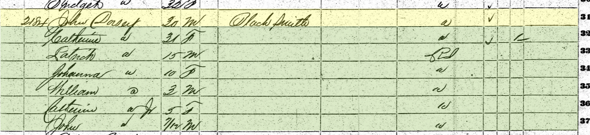

1860 U.S. census: John “Dorsey,” blacksmith, with Catherine and baby John, Ward 5, Providence
1860 United States Federal Census, Providence Ward 5, Providence County, Rhode Island, page 155 (Ancestry collection 7667, record 34906765, image 4293578_00403; NARA M653)

The original record, as it appears in the register or index.
What this document is
The United States census. A census taker went door to door and wrote down every person in each household, with age, birthplace and work.
What it says
1860 census, Providence Ward 5, enumerated July 1860; dwelling 1412, family 2184. Written on the page as Dorsey (Ancestry also indexes it as D’Arcy). John, 30, male, blacksmith, born Ireland. Catherine, 31, female, marked as married within the year. Patrick, 15, male, born Rhode Island. Johanna, 10, female. William, 3, male. Catherine, 5, female. John, 7/12 (seven months), male, born Rhode Island. Why this is very likely the Darcy family: same ward as the 1875 Darcy household; father a blacksmith in both; the children Catherine (5 → 19), William (3 → 16) and John (7 months → 15) are 14, 13 and about 14½ years older (the adults’ ages fit less well: John 30 → 40, Catherine 31 → 38, then 60 in 1880); and a 7-month-old in July 1860 fits John F. Darcy’s birth on December 8, 1859. Patrick and Johanna, older than the marriage, may be Catherine’s children from an earlier marriage (unproven). John F. Darcy’s birth year is itself in conflict: 1859 in late records, December 1862 in the 1900 census, and about 1861–62 from his marriage ages.
Place
Ward 5, Providence, Rhode Island
How it was read
probable